Browser labs are JavaScript models. Jupyter notebooks use Python models and display React Native examples. Actual TSX runs in Expo. This static reading copy includes every lesson, check, hint, and solution, and needs no JavaScript.
LESSON 01 · Seed
From an idea to a living screen
Follow one Plantopedia screen from a JavaScript function to a phone, and choose the right Expo runtime.
By the end, you can…
You can explain the separate jobs of React, React Native, Expo, and the API.
You can start the appropriate preview without replacing the repository’s pinned dependencies.
You can identify a feature that needs a native development build.
Bring with you
You can read a JavaScript function, an object, and an array.
You know how to open a terminal in a project folder.
Imagine that you have photographed two young lemon trees. Both trees belong to the same species, but one lives on a sunny balcony and the other lives beside a shaded window. Plantopedia keeps their photographs and observations separate. Over this course, you will build up the ideas needed for that experience: a useful screen, a stable identity for each plant, changes the reader can see, and records that survive an interrupted connection.
This lesson starts with a small screen and an accurate map of where its parts run. You do not need a cloud account to read the course or operate its browser experiments. Those experiments are JavaScript teaching models. They do not run Expo, draw native phone controls, open a camera, or test real authentication. The Jupyter notebooks display React Native examples and run small Python models of the same ideas. Run actual TSX components in an Expo learning project or a separate learning copy of this repository.
Give each layer a clear job
React describes a screen as a tree of components. A component is a function that returns the pieces the reader should see. React Native supplies pieces such as View, Text, and Pressable and connects that description to each supported platform. Expo supplies development tools and libraries for jobs such as using the camera. These names work together, but they do not mean the same thing.
Plantopedia also has a separate server. The phone asks that server for private plant records, and the server checks who is asking before using its storage and external providers. The mobile component does not hold a Firebase administrator credential or a private AI provider key. When the network fails, a component can still display local information; the server has not moved inside the phone.
Find the three large code areas before editing anything. The src directory holds the app, server holds the API, and packages/contracts holds shared definitions that both sides can check. A shared definition describes a record; it is not a shared database. This distinction will become important when a saved draft exists on the phone but has not reached the server.
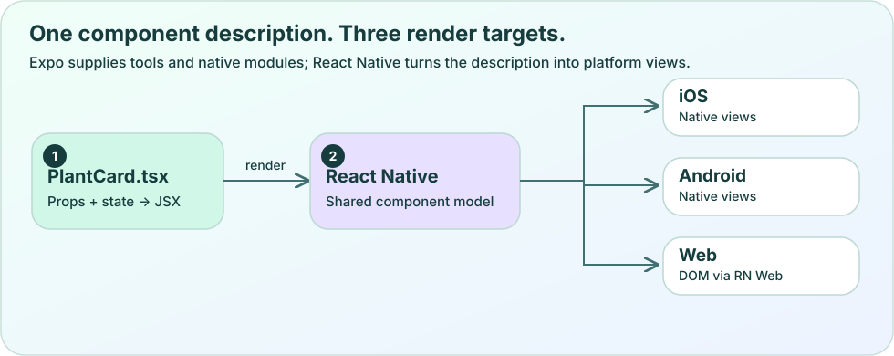
Original vector diagram. Scroll horizontally on a narrow screen. Download the SVG.
Use the versions this app was built with
This checkout pins Expo 57, React Native 0.86.3, React 19.2.3, and TanStack Query 5.104.3. Its README specifies Node 22.23.1 and npm 12.0.2. Use the repository’s lockfile and scripts for this course. A command copied from a newly published tutorial may create a different Expo project, so creating a fresh latest project is a separate experiment rather than a repair for this checkout.
Run the installation commands from the repository root. npm ci installs the locked workspace dependencies and runs the repository’s guarded installation patches. Building contracts produces the shared package’s compiled files. The environment setup script creates a dummy local configuration only when the file is absent. It preserves an existing file, so it does not fill in missing settings for you.
For an existing working checkout, do not reinstall simply to read a lesson. If an installation fails, read the first error and the README’s compatibility notes. Do not use force flags to make a dependency disagreement disappear. A successful installation means tools are present; it does not prove that credentials, network access, camera permissions, or cloud resources are ready.
Repository setup, run from the repository root
node --version
npm --version
npm ci
npm run build:contracts
node scripts/setup-env.mjs
Choose a preview that contains your feature
Expo Go is an installed preview app with a predefined set of native capabilities. A development build is your own app binary with your chosen native modules and developer tools. JavaScript can change quickly while that binary is running. Adding a new native module changes what the binary must contain and therefore requires a matching rebuild.
In this repository, npm start selects Expo Go. After a custom Plantopedia development client has been built and installed, npm run start:dev-client selects that client. The continuous native Voice Chat feature depends on the local PlantopediaVoice module, which Expo Go does not contain. A working card or camera preview in Expo Go is not evidence that this voice bridge will run there.
For localhost browser development, use npm run web:local and follow the README’s local authentication profile instructions. The script coordinates a local API and the browser app. This checkout’s native profile and localhost browser profile can use different Clerk instances, so stop Metro before switching profiles. EAS cloud builds can compile the native app without a local Xcode or Android Studio installation; running local simulators is a separate workflow.
Read your first component slowly
The WelcomeCard below is a complete teaching component. It imports the native pieces it uses, defines a function, and returns a View containing two Text children. The name prop is an input supplied by its parent. Curly braces place the value of a JavaScript expression inside the returned screen description.
StyleSheet.create groups styles under names. The numeric spacing values are layout units, not instructions to draw a particular number of physical screen pixels. flexDirection is column by default in React Native, so these two text items appear one below the other. Nothing in this component makes a request or saves data; its job is deliberately small.
To try it in a separate learning copy, place it in src/components/WelcomeCard.tsx and import it into a route. Do not replace src/app/_layout.tsx with this component: that file hosts the real app’s providers and navigation. Changing the visible greeting should require changing the input or text, without dismantling those shared responsibilities.
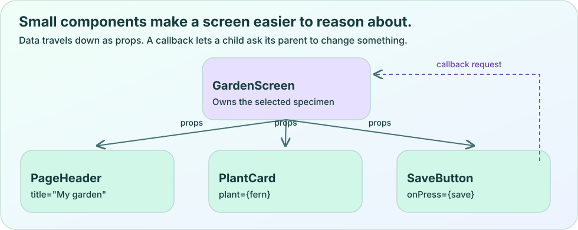
Original vector diagram. Scroll horizontally on a narrow screen. Download the SVG.
A phone’s localhost refers to that phone, not to your laptop. Plantopedia’s public configuration accepts HTTPS API addresses and HTTP loopback addresses for local development; it does not accept an arbitrary HTTP LAN address. A physical phone therefore needs a reachable HTTPS API endpoint. Successfully scanning Metro’s QR code only proves that the phone found the app’s development bundle, not that it can reach the separate API.
The current app can show a guest experience when cloud configuration or sign-in is absent. Guest records and authenticated cloud records have different owners and different capabilities. For configured cloud development, synthetic AI provider mode still requires the matching Clerk and Firebase setup described in the README. It does not replace those services with memory-only storage. Start by naming which experience you are testing, then diagnose the first failing boundary.
Experiment
Predict which preview can run a simple card, a camera workflow, and the custom native voice bridge. Change the runtime and feature controls. Explain why downloading JavaScript cannot add a missing native module.
The card renders in Expo Go, but the custom native voice bridge is missing. What should you do?
Install a matching Plantopedia development build, then use the development-client command.
Add another Text component to load the native module.
Put a private provider key in the greeting component.
Check the answer and reasoning
Option 1. The native module must be compiled into the installed app binary. A JavaScript change cannot create that compiled module. Provider credentials belong on the server and do not fix a missing native capability.
Your physical phone loads the bundle but cannot call http://localhost:3001. What does localhost identify there?
The nearest laptop on Wi-Fi.
The phone itself.
The Expo documentation server.
Check the answer and reasoning
Option 2. Loopback identifies the device making the request. Metro and the API are separate connections. This repository requires a reachable HTTPS API address on a physical phone.
Why does this course use npm ci for this repository?
It silently updates Expo to whichever release is newest.
It provisions all cloud services.
It installs the dependency versions recorded in the lockfile.
Check the answer and reasoning
Option 3. The lockfile is the reproducible starting point for the checked-in app. Installation does not provision services or prove native acceptance. Updating framework versions is a separate task.
Trace one greeting through the app
In a separate learning copy, add the WelcomeCard to an existing route and explain every boundary involved in seeing it. You can complete the written part without accounts.
Write a four-sentence explanation of React, React Native, Expo, and the server before running commands.
Check the Node and npm versions against the README, then use the locked setup commands if the learning copy needs installation.
Render WelcomeCard with your name and change its supporting sentence. Keep the existing root providers.
Choose browser, Expo Go, or a development client and record which feature you can actually verify there.
Write down the difference between reaching Metro and reaching the API. Do not copy credentials into your notes.
Acceptance criteria
Your route displays a greeting supplied through a prop.
You can name the directory holding the component, the API, and the shared contracts.
Your notes correctly identify native voice as requiring the custom binary.
Hint
Find the existing Screen and Card usage in the Explore route. A new small component can sit inside that screen without replacing its layout.
Worked solution
Import WelcomeCard from ../../components/WelcomeCard in a route under src/app/(tabs), then add <WelcomeCard name="Avery" /> inside its existing Screen. React evaluates the component, React Native maps its pieces to the target, and Expo supplies the preview/build tools. The greeting needs no API request. A cloud plant list does, and the phone must reach that API independently of Metro.
Explain it in your own words
If a JavaScript greeting update appears immediately but a new native library still reports “module missing,” which part of the installed application needs to change, and why?
Find this idea in Plantopedia
package.json — Records the framework versions, workspace scripts, and default Expo Go runtime.
README.md — Defines the local environment profiles, setup commands, cloud prerequisites, and native voice limitation.
src/app/_layout.tsx — Places preferences, query, session, and navigation providers around route screens.
A small component has a clear input and a clear visible result.
A successful bundle connection does not prove that the API is reachable.
Expo Go and a custom development client contain different native capabilities.
LESSON 02 · Seedling
Build a card that adapts
Turn a plant record into a reusable, readable, accessible React Native component.
By the end, you can…
You can pass data and callbacks into a reusable component.
You can predict how row and column layouts change their main axis.
You can make a plant card usable with larger text and assistive technology.
Bring with you
You can describe the app’s runtime layers from lesson 01.
You can read an object and pass a function as an argument.
A plant card seems simple until you try three names, a narrow phone, and a larger text setting. “Fern” fits almost anywhere. “Lemon tree beside the east balcony door” needs room. A useful component expresses the relationship between a photograph, a title, and an action while leaving enough freedom for real content.
In this lesson, the same card receives different plant summaries without copying its markup. You will connect the visible result to its inputs, explore layout rules, and check what a person using a screen reader or keyboard needs to understand the action. The browser lab models layout choices; confirm final React Native layout in Expo.
Pass the record in, and report the action out
Props are the named inputs a parent gives to a child component. A card might receive a nickname and a function to call when pressed. The parent still decides what selecting a plant means. This lets the card display a search result, a recent discovery, or a garden item without having to know which screen contains it.
The teaching type PlantSummary deliberately contains only id, nickname, and scientificName. It is a small display shape, not a replacement for the full Plant contract. A full saved record has revision information, timestamps, ownership, and other fields. Naming the teaching shape avoids suggesting that a three-field object can be sent anywhere the production contract expects a complete record.
Read the callback in the example carefully. onPress receives a function that will run later. Writing onPress={onSelect(plant.id)} would call the function while building the screen. Writing onPress={() => onSelect(plant.id)} waits for the reader’s press. A child should not change the object it receives; it should report the action to the owner of that information.
Original vector diagram. Scroll horizontally on a narrow screen. Download the SVG.
Each View arranges its own children. flexDirection chooses the main axis. With row, the children are arranged across the available width; with column, they are arranged down the available height. justifyContent distributes space along that main axis. alignItems controls alignment across the other axis. Changing the direction changes what “along” and “across” mean.
In the card, the marker has a fixed width because its decorative job is predictable. The text container uses flex: 1 so it can occupy remaining room. The text is not assigned a fixed height. That allows a long name to wrap and a larger system font to increase the card’s height. Setting the whole card to height: 88 would remove that freedom.
Numeric padding creates interior space. gap separates children. A border radius changes the corners, not the layout relationship. Start with these structural choices before adding glow or blur. If the label is clipped, increasing the shadow will not help. In the lab, change direction first and explain which axis changed, then reduce the available width and watch which content needs room.
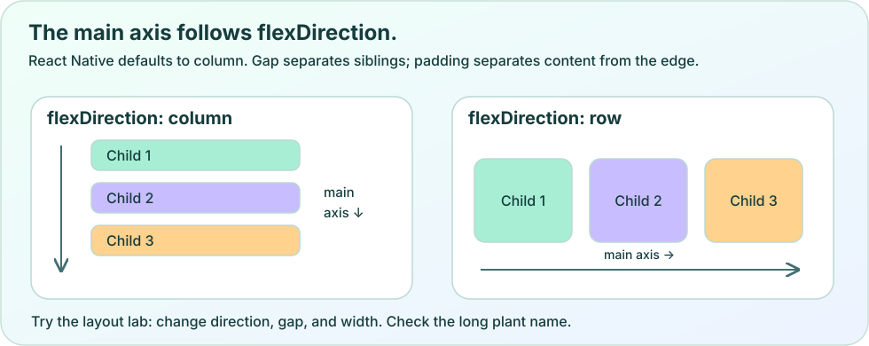
Original vector diagram. Scroll horizontally on a narrow screen. Download the SVG.
Render a list without losing the identity of its rows
A reusable card becomes more valuable when a list creates one for each record. FlatList is designed for lists whose content can extend beyond the visible area. The list needs a stable key for each item so React can associate a rendered row with the same logical record when ordering or contents change.
Use the specimen’s id as that key. An array position is a description of where an item currently sits, not of which plant it is. If the first record is removed, every later array position changes. Two plants can also share a nickname or scientific name, so those labels are poor identity keys.
The second teaching file imports the display component and supplies two sample records. The callback shows an alert simply to make the press visible. Later, you will replace that response with navigation. The sample data does not come from a server and does not claim to persist. Keeping that boundary explicit makes the next lessons’ added responsibilities easier to see.
Teaching screen: PlantList.tsx
import { Alert, FlatList, Text } from "react-native";
import { PlantSummaryCard, type PlantSummary } from "./PlantSummaryCard";
const examples: PlantSummary[] = [
{ id: "lemon_east", nickname: "East balcony lemon", scientificName: null },
{ id: "lemon_west", nickname: "West window lemon", scientificName: null },
];
export default function PlantList() {
return (
<FlatList
data={examples}
keyExtractor={(plant) => plant.id}
contentContainerStyle={{ padding: 20, gap: 12 }}
renderItem={({ item }) => (
<PlantSummaryCard plant={item}
onSelect={(id) => Alert.alert("Selected specimen", id)} />
)}
ListEmptyComponent={<Text>
Your first plant will appear here. Use Scan to add a specimen.
</Text>}
/>
);
}
Make the action understandable without its decoration
A screen reader needs to know what the card does. The Pressable has a button role and a label that includes the plant nickname. That label remains meaningful even if the decorative leaf is never announced. An icon by itself does not tell a reader whether pressing it opens details, marks a favorite, or deletes a record.
Give important actions enough room to operate. This card’s padding and minimum height make its press area much larger than the text alone. On the web, verify keyboard focus is visible and that the action works from the keyboard. On a phone, turn on the platform’s screen reader and listen to the label. A browser’s automated checks cannot substitute for that native reading order.
The current production PlantCard adds a separate options button and an accessibility action for removal. It does not rely only on the left-swipe gesture. That matters because a reader may never discover or be able to perform the gesture. When you add a gesture shortcut, preserve a clear alternative action. Keep delete separate from opening the card so the two purposes are not hidden behind the same label.
Separate a visual improvement from a new responsibility
The repository’s real PlantCard uses the shared theme, translated copy, authenticated private photos, navigation, and deletion state. You can recognize the same outer structure in the smaller teaching component: a pressable surface, a picture area, and flexible details. Production behavior grows around that understandable structure rather than requiring a completely different mental model.
When reviewing your card, change one input at a time. Try a null scientificName, a long nickname, and two specimens with the same name. Then change text size and available width. Explain whether each result comes from the data, the layout, or the action callback. This habit makes debugging specific: “the text container needs room to grow” is actionable, while “the screen feels broken” is not.
Experiment
Predict the main axis, then switch row and column. Adjust width and text size. Explain which element should stay fixed and which should use the remaining space.
A card has flexDirection: "row". Which property distributes its children along that row?
borderRadius
justifyContent
alignItems
Check the answer and reasoning
Option 2. justifyContent acts along the main axis, which row makes horizontal. alignItems works across that axis. A border radius changes corner shape and does not distribute children.
Why should two lemon-tree cards use different keys?
Keys are decorative labels shown on screen.
Every card needs a new random key on every render.
Each key should identify its particular specimen even when the list changes.
Check the answer and reasoning
Option 3. Stable specimen IDs let React associate each row with its logical record. Random keys destroy that continuity; a shared species label cannot distinguish the two trees.
What is the best response when a larger system font clips the nickname?
Allow the text and card to grow and recheck the layout.
Disable font scaling everywhere.
Replace the nickname with an unlabeled icon.
Check the answer and reasoning
Option 1. The content should remain readable at the reader’s preferred size. Flexible text space and minimum rather than fixed height preserve that room. Removing labels or disabling scaling avoids the symptom by removing access.
Create three cards from one component
Use the teaching card in a separate Expo learning copy and make its behavior understandable with short, long, and missing data.
Render three PlantSummary objects with stable, different IDs. Make two share the same scientific name.
Give one specimen a long nickname and another a null scientificName.
Supply one onSelect callback from the parent and show the selected ID.
Compare a narrow layout with a larger text setting and remove fixed heights that clip words.
Operate the card with assistive technology and, on web, a keyboard. Record the announced action and the visible focus behavior.
Acceptance criteria
All three cards use the same component and preserve their separate IDs.
The uncertain-identification fallback appears for null data.
Long text wraps without hiding the action.
The card’s accessible name describes opening the named plant.
Hint
Treat the marker as fixed decoration and the text container as flexible content. The nullish-coalescing operator chooses a fallback for null or undefined.
Worked solution
Create one array of three objects and feed it to FlatList with keyExtractor={(plant) => plant.id}. Keep the text container at flex: 1, use minHeight on the card, and avoid a fixed height on either text element. Pass onSelect as a callback from the list. The shared species name affects the visible description, while the distinct id determines which specimen is selected.
Explain it in your own words
If the same card appears in both Search and My Garden, which information should be passed as props and which decision should remain with the parent screen?
Find this idea in Plantopedia
src/components/PlantCard.tsx — Shows the production row structure, navigation callback, flexible details, options action, and stable specimen data.
src/components/ui.tsx — Collects reusable screens, buttons, typography, and feedback surfaces.
Props let one component display different records without copying its structure.
Layout direction determines the main axis; content needs room to respond to width and text size.
A stable record ID and an understandable action label solve different problems.
LESSON 03 · Seedling
Give every plant a place to go
Connect tabs and detail screens while preserving the identity of each individual specimen.
By the end, you can…
You can translate an Expo Router filename into a route.
You can pass a specimen ID into a dynamic detail screen.
You can explain why route parameters do not authorize access to a record.
Bring with you
You can pass a plant summary and a callback into a card.
You can distinguish an ID from a visible name.
The east balcony lemon and the west window lemon look similar in a list. Selecting either should open that particular tree’s history. Navigation needs an identity that survives renaming, reordering, and a later identification correction. The label a reader sees is useful context, but the stable specimen ID determines which record the app opens.
Plantopedia uses Expo Router to connect file structure with screen structure. This lesson adds navigation to the card from lesson 02. You will separate tab destinations from detail screens, inspect a route parameter, and consider a reader who opens a detail link directly without first visiting the list.
Read the file tree as a map
Inside src/app, a regular filename becomes a route segment. The file search.tsx corresponds to /search. An index.tsx file is the default screen for its containing route. The parentheses in (tabs) create a route group: they organize screens and layouts without adding “(tabs)” to the public URL.
The file plants/[plantId].tsx contains square brackets because plantId is a value supplied by the destination. For example, /plants/lemon_east and /plants/lemon_west use the same screen component with different IDs. A layout file named _layout.tsx describes how its child screens relate through a stack, tabs, or shared providers.
In this app, src/app/_layout.tsx establishes the outer stack and shared providers, while src/app/(tabs)/_layout.tsx configures the tab area. You do not need to add a different component file for every saved tree. One detail route plus a parameter can display many individual histories. Keep non-route helpers in src/components, src/services, or a feature directory so the app directory remains a readable screen map.
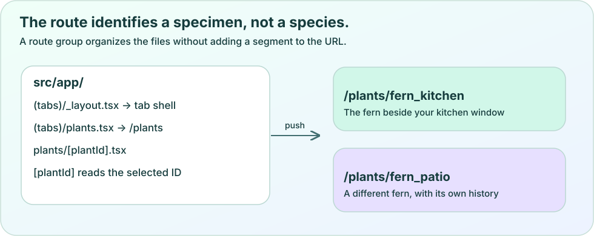
Original vector diagram. Scroll horizontally on a narrow screen. Download the SVG.
The router exposes navigation functions that an event handler can call. push adds a destination to the navigation history. back returns through available history, while replace changes the current entry. Use the choice that matches the journey you want the reader to experience; the fact that all three can change the visible screen does not make their back behavior identical.
The teaching button below receives a specimen ID and sends it as the dynamic plantId parameter. Using the named pathname makes the connection between the file’s bracket name and the supplied parameter visible. The destination contains only the record identity. It does not contain a photograph, a whole mutable plant object, or a session token.
Passing an entire plant through a link would create a second copy of information that can become stale. Suppose the nickname changes on another device. A detail screen should load the current record for its ID, rather than trust the old nickname embedded in navigation. The next API lesson adds that loading step. For now, trace how the same button opens two different IDs.
A route parameter is external input. A reader can type or change a URL; a link might also be old or malformed. The TypeScript type you supply to a hook helps you write code, but it does not prove that an incoming value obeys the application’s rules. Runtime validation performs that separate check.
The teaching detail route below uses the existing shared Id schema. It accepts one string and rejects an absent, repeated, or malformed value. The component deliberately displays the validated ID rather than pretending it has already loaded a plant. In lesson 05, that ID becomes part of the query key and API call.
The example includes a back action with a fallback. A detail screen opened from a list usually has a previous entry. A fresh deep link may not. Asking whether the router can go back prevents the screen from relying on a visit that never happened. The fallback replaces the current destination with /plants so the reader still has a clear way into the collection.
Teaching route: src/app/plants/[plantId].tsx in a learning copy
import { Id } from "@plantopedia/contracts";
import { useLocalSearchParams, useRouter } from "expo-router";
import { Button, Text, View } from "react-native";
export default function PlantIdentityScreen() {
const { plantId } = useLocalSearchParams<{
plantId?: string | string[];
}>();
const router = useRouter();
const parsed = Id.safeParse(plantId);
function leave() {
if (router.canGoBack()) router.back();
else router.replace("/plants");
}
return (
<View style={{ padding: 24, gap: 16 }}>
<Text>{parsed.success
? `Specimen ID: ${parsed.data}`
: "This plant link is not valid."}</Text>
<Button title="Back to your garden" onPress={leave} />
</View>
);
}
Keep a species page separate from a specimen page
A species describes a kind of plant. A specimen describes one particular plant someone photographed or saved. Both lemon trees may link to the same species catalog entry, while keeping different specimen IDs, photographs, observations, ownership, and places.
This distinction appears in the route tree. A species catalog page lives at species/[speciesId].tsx, while a saved individual lives at plants/[plantId].tsx. A care description for the species can help both trees. A note saying “I moved this tree into the shade today” belongs to one specimen. Routing by scientific name would collapse these different purposes.
Try renaming “East balcony lemon” to “Kitchen lemon.” Its specimen ID should stay the same, and a saved detail link should continue to identify that tree. Also consider an identification correction: a previously uncertain tree may later have a different scientific name. The specimen’s history should not disappear because its label became more accurate.
Make each destination explain its current state
The current tab layout includes Explore, My Garden, Scan, and Ask. Settings remains routable but is hidden from the main tab bar through its options. This shows that “not visible as a tab” is a presentation choice, not the removal of the route or a permission rule.
A complete detail screen needs to explain loading, missing records, failed requests, and available records. These are different outcomes. A deleted specimen should not be shown as an empty editable record, and a slow connection should not be described as “no plants.” As you add data in later lessons, preserve this distinction between a destination existing and a requested record being available.
For a cross-platform check, open the same specimen from its card on a phone and from its URL on the web. Confirm that both resolve to the same identity. Then open the URL in a fresh browser tab. The second check is valuable because it removes assumptions about previous navigation and in-memory screen data.
Experiment
Open each specimen, compare its ID with its species, and use Back. Predict what happens to the route when a nickname changes. Explain which values must remain stable.
What URL does src/app/(tabs)/plants.tsx represent?
/(tabs)/plants
/plants
/tabs/plants.tsx
Check the answer and reasoning
Option 2. The parentheses mark a route group and do not add a URL segment. The group can still provide a shared layout, so leaving it out of the URL does not make it meaningless.
Two saved trees have the same scientific name. What should identify their detail routes?
Two distinct specimen IDs.
The scientific name alone.
Their current array positions.
Check the answer and reasoning
Option 1. Each specimen needs a persistent identity for its own history. A shared species label cannot distinguish the trees, and an array position changes when the collection is reordered.
A route parameter passes the Id schema. What has this proved?
The current account owns the plant.
The plant definitely exists on the server.
The value has the expected identifier shape.
Check the answer and reasoning
Option 3. Shape validation rejects malformed input. Existence and authorization require separate server checks. A syntactically valid ID can still refer to a missing or inaccessible record.
Follow two specimens through one detail route
Connect the teaching cards to a dynamic route in a separate learning copy, then verify normal and direct-link journeys.
Create two sample lemon-tree summaries with different IDs and the same species name.
Replace the card’s alert callback with router.push using /plants/[plantId] and the selected ID.
Display the validated route parameter on the teaching detail screen.
Rename one specimen without changing its ID and explain why its saved route still has the same identity.
Open a detail URL directly on web and provide a Back fallback when no prior screen exists.
Describe, in writing, where a request for another account’s specimen must be rejected.
Acceptance criteria
Each card opens the same route component with its own ID.
The route group does not appear in the public URL.
Malformed input produces an explanatory state.
The direct-link journey provides a usable exit even without prior history.
Hint
The bracket name plantId and the params object key must agree. Keep the hook calls above conditional rendering branches.
Worked solution
The parent callback calls router.push({ pathname: "/plants/[plantId]", params: { plantId: id } }). The destination reads useLocalSearchParams, validates the value with Id.safeParse, and displays either the validated identity or an invalid-link message. Use router.canGoBack() before router.back(), otherwise replace with /plants. Keep the nickname and species as display data; only the stable specimen ID chooses this history.
Explain it in your own words
A plant is renamed and later identified as a different species. Explain which routes should stay stable, which catalog link may change, and where the observation history belongs.
Route groups organize layouts without changing public URL segments.
A dynamic route lets one component display many individual records.
Parameter validation, record existence, and account permission are separate checks.
LESSON 04 · Roots
Let the screen remember
Use state, immutable updates, reducers, and context without creating competing copies of the same fact.
By the end, you can…
You can predict the result of repeated state updates in one event.
You can update one item in an array without changing the previous array.
You can choose local state, lifted state, context, or a reducer for a concrete job.
Bring with you
You can build a component from props and call an event callback.
You can follow map and filter on JavaScript arrays.
A plant card becomes interactive when the screen remembers something: whether its menu is open, what the reader has typed, or which photo is selected. A plain local variable does not give React a reliable instruction to display a new result. State connects an event to the next screen description.
The goal is not to place every value in a large global store. The goal is to give each fact a clear owner. Plantopedia uses small local values for screen interaction, context for shared preferences and session services, and TanStack Query for server records. This lesson teaches the first two responsibilities and prepares you to recognize the third.
A state value belongs to one render
useState returns the value for the current render and a setter that requests an update. The current event handler continues to see that render’s value even after calling the setter. If count is 0, two calls to setCount(count + 1) both request the value 1. They do not make the count variable become 1 between the calls.
When the next value depends on the previous queued value, pass an updater function. Two calls to setCount(previous => previous + 1) produce 2 from 0 because each updater receives the result of the preceding update. The teaching component places the two choices side by side so you can predict the result before pressing either button.
Both methods are useful when their intention is clear. A direct setter can replace a value with a chosen nickname. An updater is useful when building from what is already there. Do not depend on an immediate console log after the setter to show the next render’s state. Read the rendered result or inspect the subsequent render instead.
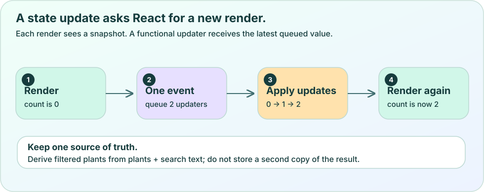
Original vector diagram. Scroll horizontally on a narrow screen. Download the SVG.
Suppose a note editor stores text and also stores an isBlank boolean. Every edit must update both values correctly. Instead, keep the text and calculate text.trim().length === 0 while rendering. The blank condition follows automatically from the value it describes.
The same principle applies to a selected plant. If you have a list and a selected ID, you can find the selected record from those values. Keeping a second, independently edited copy of the whole plant invites disagreement. One copy might have a new nickname while the other still has the old one.
Plantopedia’s profile screen keeps local note text, disclosure state, and a selected photo ID. These represent reader interaction. The loaded plant detail belongs to its query. Copying every server record into useState would force the screen to invent its own rules for refreshing, errors, and account changes. We will let the query own that work in the next lesson.
Create a new array for a new result
Treat an array already held in state as the previous description of the data. To rename one item, use map to return a new array and a new object for the changed item. To remove an item, use filter. Reading an existing object is fine; changing its nickname directly would also change the old object that other parts of the code may still reference.
A shallow array copy alone does not copy every object inside it. Writing const next = [...plants] and then changing next[0].nickname still changes the original first object. The teaching reducer below uses an object spread only for the matched record. The other records can keep their existing references because their data has not changed.
An immutable update makes the transition easier to explain and test. You can compare the previous array with the next array and still inspect what the previous record contained. This is especially valuable when two specimens share a name: match the stable ID, so only the intended one changes.
A reducer names the transition; context shares access
A reducer is a function that receives the previous state and an action, then returns the next state. The action describes an event such as rename or remove. It is useful when several related handlers need the same transition rules. A reducer should not send a network request, read a token, or write a file while calculating that next state.
Context solves a different problem. A provider makes a value available to descendants without passing it through every intermediate component. It does not automatically decide transition rules, persist data, or authorize access. You can combine a reducer with context, but neither requires the other.
This repository’s PreferencesProvider shares theme, language, translated words, and the setter for preference changes. SessionProvider shares the current owner’s API client and related services. These are separate contexts because their responsibilities differ. A menu that opens only inside one card usually belongs in that card’s local state, not in a provider used by every screen.
Teaching component using the reducer: SummaryEditor.tsx
If two sibling components both need the same selected photo, move that selected ID to their nearest shared parent and pass the value and callbacks down. This is often called lifting state. The parent becomes the owner, so selecting a thumbnail and displaying its detail cannot silently update unrelated copies.
Keep hooks at the top level of a component or another hook. Do not call useState only when a menu is open or inside a loop over plants. Each card can be its own component with its own top-level hook. This gives each rendered card a stable place for its interaction memory.
Finally, distinguish memory from persistence. useState and a reducer do not keep an unsaved note after the process ends. Context also disappears with the running app. Plantopedia uses storage for records that must survive a restart. Choosing context because a value is important does not make that value durable; storage is an additional responsibility taught in lesson 08.
Experiment
Reset the counter, predict two replacement updates, and run them. Reset again and run two updater functions. Then rename one specimen and explain why its neighbor and the previous array should stay unchanged.
count is 0. One handler calls setCount(count + 1) twice. What does the next render show?
2
1
An error because setters can run only once.
Check the answer and reasoning
Option 2. Both expressions read count from the same render, so both request 1. Updater functions would each receive the latest queued result and could produce 2.
You copied an array with [...plants]. Is it safe to change next[0].nickname directly?
Yes, because spread recursively copied every item.
Yes, if both plants have the same name.
No, because the item object is still shared with the previous array.
Check the answer and reasoning
Option 3. The array is new, but its existing item references are reused. Return a new object for the changed item, usually through map, to preserve the previous state.
Which value most naturally belongs in a card’s local state?
Whether that one card’s options menu is open.
A server administrator key.
A second independent copy of every query result.
Check the answer and reasoning
Option 1. A local menu is an interaction owned by the card. Private credentials belong on the server, and duplicating query data introduces another source that must be kept synchronized.
Rename one lemon tree and preserve the other
Implement and explain an immutable rename transition, then connect it to a small reducer-driven screen.
Start with two summaries whose nickname is Lemon and whose IDs differ.
Predict the two counter results before operating the browser lab or Expo component.
Implement rename with map and match by id. Create a new object only for the matched record.
Assert in a small logic check that the previous array still contains the original nickname and that the west specimen is unchanged.
Connect the reducer to SummaryEditor and explain why dispatch describes an action rather than directly editing a Text node.
Write where you would put a shared selected-photo ID and what additional work would make an unsaved note survive a restart.
Acceptance criteria
Only the selected ID receives the new name.
The previous record object is unchanged.
The rendered list uses stable IDs as keys.
Your explanation separates local memory, shared access, transition logic, and durable storage.
Hint
The rename branch should return state.map(...). Its matching branch returns {...plant, nickname: action.nickname}.
Worked solution
Use the summariesReducer shown above. For a rename of east, next !== previous, next[0] !== previous[0], previous[0].nickname remains Lemon, and next[1] === previous[1] because the west record did not change. Dispatching causes useReducer to calculate a new state and React to render that result. A shared parent can own selectedPhotoId; surviving process termination requires a storage write and restore path.
Explain it in your own words
A note editor, a photo strip, and a save button need to agree on the selected specimen. Describe a state owner for that identity, and explain why putting it in context alone would not make it survive a restart.
State setters schedule a future render; the current handler keeps its snapshot.
A new array must also contain a new object for an item whose data changes.
Context shares access, reducers define transitions, and storage provides durability.
LESSON 05 · Roots
Ask for data and tell the truth
Handle asynchronous requests, validate responses, and use TanStack Query to keep each owner’s records coherent.
By the end, you can…
You can explain network rejection, HTTP errors, invalid response data, and an empty success separately.
You can build an owner-scoped query key and display cached data during a refresh.
You can explain when a successful write should invalidate a query.
Bring with you
You can distinguish local interaction state from server-owned records.
You can read async functions and a try/catch block.
A garden screen cannot assume that a request finishes immediately or succeeds. The reader may be on a train, the server may reject a session, or a deployment may return a response with an unexpected shape. A useful interface tells the reader which situation actually happened while preserving useful information it already has.
This lesson follows a request from a React Native screen to Plantopedia’s API and back. You will first inspect the steps hidden behind a simple load function, then let TanStack Query manage the lifecycle of reading server records. The interactive network lab uses deterministic example responses; it sends no live requests and requires no account.
An asynchronous request is a sequence of separate checks
fetch starts a request and returns a promise for a response. await lets an async function continue when that promise settles without blocking the screen’s ability to respond. A network failure can reject that promise. An HTTP response such as 401 or 500 normally still produces a Response object, so the code must also inspect response.ok.
After an acceptable HTTP response, parsing JSON is another step that can fail. Even valid JSON may have the wrong fields. TypeScript checks the code you wrote, but it cannot guarantee that bytes arriving over the network match its types. The PlantPage runtime schema checks the response before the app treats it as a page of plant records.
The teaching helper below exposes those boundaries explicitly. It assumes the caller already has the correct API base URL and a current token. It uses the existing contract rather than declaring a smaller pretend server response. Do not call this helper with a token placed in a URL, saved in a notebook, or printed into logs.
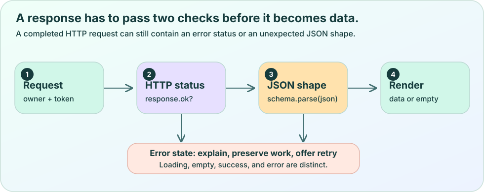
Original vector diagram. Scroll horizontally on a narrow screen. Download the SVG.
The real apiClient in src/services/api.ts performs more work than the teaching helper. It obtains a current token through a callback, uses validated public configuration, checks typed API errors, validates successful responses, and tracks the session’s request lifecycle. Its dispose method aborts requests when that client is released.
Keeping this logic out of each card prevents every screen from inventing slightly different headers and error behavior. The session provider supplies the client for the current owner. The UI asks api.plants() for records rather than reading a credential or constructing a provider request itself.
An owner can be a signed-in cloud account or the app’s local guest owner. The screen can use the same high-level service methods while their available behavior differs. Guest mode is a local experience, not proof that a cloud request has been authenticated. The next lesson examines that authorization boundary in detail.
Give each result a key that describes all of its identity
TanStack Query keeps results under query keys. Plantopedia’s collection key is [owner, "plants"], and a detail key is [owner, "plant", id]. The owner matters: two accounts can ask for a collection using the same screen component, and those results must not occupy the same cache entry.
A key identifies cached data; it is not a secret and does not authorize a request. The server still verifies the token and checks access. The actual client request also needs lifecycle protection when an account changes. A carefully named cache key cannot stop an already running request on its own.
The QueryClientProvider is already installed in the real root layout. Its defaults retry queries once and consider query data fresh for fifteen seconds. Those are cache freshness and retry choices. They do not mean a result is saved to durable storage, that requests are made every fifteen seconds, or that a lost connection has been repaired.
Teaching screen excerpt: runs under the existing app providers
import { useQuery } from "@tanstack/react-query";
import { Button, Text, View } from "react-native";
import { useSessionApi } from "../../services/session";
export default function GardenStatus() {
const { api, owner } = useSessionApi();
const plants = useQuery({
queryKey: [owner, "plants"],
queryFn: () => api.plants(),
});
if (!plants.data) {
if (plants.isPending) return <Text>Loading your garden…</Text>;
return <View><Text>Your garden could not be loaded.</Text>
<Button title="Try again" onPress={() => void plants.refetch()} />
</View>;
}
return (
<View style={{ padding: 24, gap: 12 }}>
<Text>{plants.data.items.length === 0
? "Your garden is empty. Try saving your first plant."
: `${plants.data.items.length} plants on this page`}</Text>
{plants.data.items.map(plant =>
<Text key={plant.id}>{plant.nickname}</Text>)}
{plants.isFetching && <Text>Checking for updates…</Text>}
{plants.isError && <Text>Showing saved query data; refresh failed.</Text>}
<Button title="Refresh" disabled={plants.isFetching}
onPress={() => void plants.refetch()} />
</View>
);
}
Design the four results the reader can actually encounter
Before the first result arrives, show a loading state. If the first request fails and there is no data, show an explanation and an appropriate retry action. If a request succeeds with an empty items array, show an empty collection message. These outcomes have different evidence behind them; an error does not prove the collection is empty.
A later refresh can fail after useful data has already arrived. In that case, keep the known cards visible and explain that checking for updates failed. isFetching can be true during both an initial request and a later refresh. Test data availability separately from refresh activity instead of replacing the whole screen with a spinner every time a request starts.
The example counts records on the returned page. PlantPage includes nextCursor and limited, so a page length is not necessarily the total collection size. In a real growing list, add an explicit pagination or load-more design rather than labeling the first page as the entire garden. Good explanations are precise about both errors and successes.
After a write, decide what is now out of date
A mutation changes server data, such as adding an observation. Once that write succeeds, a previously loaded detail may be out of date. invalidateQueries marks matching cached queries stale and can refetch active ones. Use the same owner and record identity that you used when reading the data.
The real profile screen invalidates [owner, "plant", id] after adding a note. Capture invalidates [owner, "plants"] after saving a specimen. These choices follow the visible information that changed. A mutation does not automatically know every screen that might display a related summary.
Do not retry a write blindly just because the acknowledgement was lost. The server might already have performed it. Plantopedia supplies stable operation keys for such actions; the outbox lesson explains why retrying the same operation differs from starting a new one. Start with honest success and failure handling before adding optimistic updates that temporarily display an unconfirmed change.
Teaching hook excerpt: invalidate the affected owner and specimen
Predict the screen for a successful page, empty page, HTTP failure, malformed response, and failed refresh with cached records. Run each scenario and explain why the message should differ.
fetch receives an HTTP 500 response. Which check is still necessary?
response.ok, because HTTP error responses do not normally reject fetch by themselves.
Only whether the URL contains https.
Only whether TypeScript accepted the return type.
Check the answer and reasoning
Option 1. fetch can resolve with an error-status Response. Inspect status or ok before parsing the success contract. HTTPS and static types solve different problems.
A refresh fails, but the query still has a previously loaded page. What should the screen usually do?
Announce that the garden is empty.
Keep useful records visible and explain that the refresh failed.
Delete all cached records immediately.
Check the answer and reasoning
Option 2. The failure tells you that the latest check did not succeed. It does not prove the existing records disappeared. Distinguish stale available data from an initial failure with no data.
Why include owner in [owner, "plant", id]?
It encrypts the plant ID.
It replaces token validation on the server.
It separates account-specific cache entries.
Check the answer and reasoning
Option 3. The cache key describes which owner’s result is stored. Server authentication and authorization remain necessary. A key also does not automatically cancel an in-flight request.
Build a truthful garden status screen
Use a deterministic teaching transport or the provided network lab to cover the outcomes before connecting a learning screen to the real session API.
List the result of network rejection, HTTP 401, HTTP 500, invalid JSON shape, empty success, and populated success.
Implement the no-data loading, no-data failure, empty success, and populated-data branches.
Retain the populated branch during a later refresh and show a separate refresh failure message.
Use [owner, "plants"] for the collection and [owner, "plant", id] for a detail.
After a successful note write, invalidate the affected detail key. Explain separately how a stable operation key makes a retry safer.
Record whether the displayed count describes one page or the entire collection.
Acceptance criteria
An HTTP error is not mistaken for a successful response.
Malformed data is rejected before rendering as a valid PlantPage.
An empty success and an initial failure have different messages.
Cached cards remain visible during a failed refresh.
Account identity is present in every private-record query key.
Hint
Check whether data exists before deciding that an error must replace the entire screen. Query freshness, data presence, and request activity are separate facts.
Worked solution
Use the GardenStatus branching structure. The transport checks response.ok, then parses unknown JSON with PlantPage. For private cloud reads, the session API supplies the current token and request lifecycle. A successful mutation can return query.invalidateQueries({queryKey:[owner,"plant",id]}). Keep the page visible when data exists, and use isFetching or isError for a separate update message. The existing api.plants wrapper does not consume TanStack’s signal argument, so do not claim that merely unmounting this teaching screen cancels that request; the real client’s lifecycle abort is separate.
Explain it in your own words
The app shows three cached plants while a refresh receives 401. Explain what the UI knows, what it does not know, and why fixing the query key cannot repair an expired or mismatched session.
A reliable request checks connectivity, HTTP status, parsing, and response shape.
Query keys identify cached results, while the server authorizes access.
Data availability, request activity, and freshness deserve separate UI decisions.
LESSON 06 · Branch
Keep identity and data trustworthy
Follow a private garden request from an Expo screen through identity checks and shared data validation.
By the end, you can…
You can separate signing in, permission to access a record, and checking a record's shape.
You can explain where public configuration and private service credentials belong.
You can keep local guest data distinct from an authenticated cloud garden.
Bring with you
You can explain a Query key and the difference between a successful request and valid data.
You have completed lessons 01–05.
A garden photograph may include a person's home, a private note, or a location. A friendly interface does not make this information safe by itself. The app needs a clear answer to three questions: who is making this request, which records may that person access, and does the data have the form the code expects? Each question needs its own check.
Plantopedia already has two ways to explore. A guest can use the local experience, while an authenticated session can call the private cloud API. This lesson traces that existing design. You will not create another authentication service or paste a secret into a mobile screen. You will learn to recognize the boundary where information leaves the device and why a server must make its own decisions.
Signing in answers only the first question
Signing in establishes an identity. In the cloud path, Clerk supplies a short-lived session token, which the API client sends in the Authorization header. The token is evidence for the server to verify. Merely receiving a string that looks like a token is insufficient. Plantopedia's server checks the token and expected issuer, and its active-session check also asks whether the session still belongs to that user and remains active.
Permission to access a particular plant is a separate question. Suppose Maya knows the identifier of Leo's rose. A signed-in Maya must still be unable to read Leo's notes. In the server code, verified identity is passed into application operations, and record paths are built within that owner's namespace. A form field such as owner: 'Leo' cannot be allowed to choose someone else's namespace. Hiding the detail button on Maya's screen would only change the interface; it would not protect the API.
These checks matter even when every caller uses your own React Native app. A person can construct a request without your interface. Treat the device as a place to present good choices and helpful errors, while the server remains responsible for enforcing access.
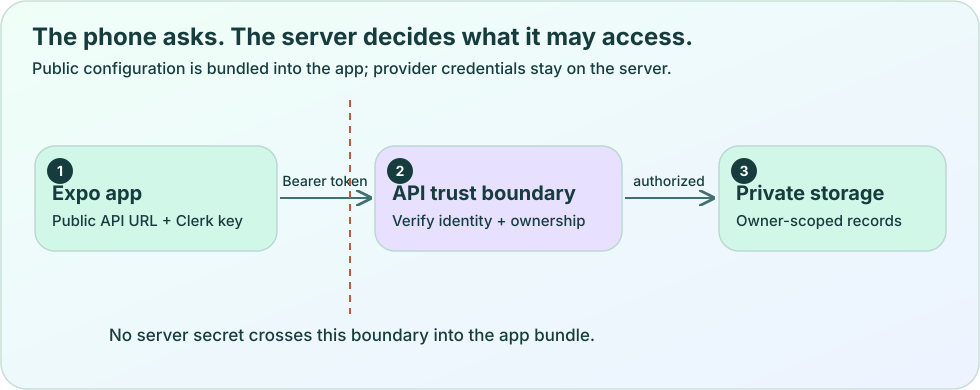
Original vector diagram. Scroll horizontally on a narrow screen. Download the SVG.
A TypeScript type cannot inspect a network response
TypeScript helps while you write and check your program. Its type annotations do not travel with a server response. Writing a type assertion after response.json() does not examine the response and cannot prevent a missing nickname or a malformed list from reaching your screen. This is why Plantopedia shares Zod schemas between its mobile client and server.
Read the following small teaching function as a complete boundary around one request. The caller provides a fresh token, a URL, and a schema. The function checks whether the token exists, checks the HTTP status, and then parses the returned unknown value. A schema failure becomes an error instead of a successful but broken view. In production, use the richer existing apiClient, which also handles structured errors, lifecycle cancellation, and request timeouts.
Validation does not establish ownership. A perfectly shaped plant can still belong to another account. Likewise, a valid token does not make an empty nickname acceptable. Keeping these checks distinct makes both the code and its error messages easier to reason about.
Teaching example: readPrivate.ts
import { z } from 'zod';
export async function readPrivate<T>(
url: string,
getToken: () => Promise<string | null>,
schema: z.ZodType<T>,
signal: AbortSignal,
): Promise<T> {
const token = await getToken();
if (!token) throw new Error('Sign in to open your cloud garden.');
const response = await fetch(url, {
headers: { Authorization: `Bearer ${token}` },
signal,
});
if (!response.ok) throw new Error(`Request failed: ${response.status}`);
const value: unknown = await response.json();
return schema.parse(value);
}
Public configuration is readable by the person running the app
An API base URL tells the app where to send requests. A Clerk publishable key identifies the client-facing application. These are appropriate public configuration values. Expo includes referenced EXPO_PUBLIC values in the compiled client bundle, so the word environment does not make them secret. Renaming a private provider key to EXPO_PUBLIC_PROVIDER_KEY would expose it.
Private provider keys, Clerk server credentials, and Firebase Admin credentials belong on the server. A screen asks Plantopedia's API for a permitted operation. The server authenticates the request and calls its configured provider. This also lets the server enforce limits and keep private credentials away from mobile bundles and browser developer tools.
Do not print a token to understand a failed request. Record a safe operation name, an error code, and whether the request was cancelled instead. A useful debugging message identifies the failing boundary without copying credentials or private plant notes into logs. The existing public configuration schema also restricts the allowed API URL form, so follow the repository's setup instructions rather than improvising an insecure device URL.
Make account changes a resource boundary
An account can change while a request is waiting. If Maya signs out and Leo signs in, Maya's late response must not become Leo's visible garden. An owner in the Query key separates cached results, but a key alone cannot cancel a microphone or stop pending work. Plantopedia creates owner-scoped API and voice resources inside SessionProvider, disposes the API scope on cleanup, and keys that provider by userId in the root layout.
The following screen excerpt uses the existing session and preferences providers. It explains that a guest action is local and offers a sign-in route for cloud features. It does not pretend that an interface message enforces server permissions. Guest storage and cloud storage are different paths, and this excerpt does not claim that signing in automatically migrates guest records.
This boundary should guide your own additions. Store drafts under the owner they were created for, include that owner in server-data cache keys, and close resources when their owner goes away. If a save has partly completed, preserve its original operation identity instead of silently replaying it as another account.
import { Text, Button, View } from 'react-native';
import { useRouter } from 'expo-router';
import { useSessionApi } from '../services/session';
export function CloudNotice() {
const { kind } = useSessionApi();
const router = useRouter();
if (kind === 'guest') {
return (
<View style={{ gap: 12 }}>
<Text>Your guest garden is stored locally.</Text>
<Button title="Sign in for cloud features"
onPress={() => router.push('/login')} />
</View>
);
}
return <Text>Your cloud requests use your signed-in session.</Text>;
}
Experiment
Predict which check should reject a missing token, a wrong owner, and a malformed response. Change the lab's inputs one at a time and explain why a valid shape cannot replace permission.
A screen hides Leo's plant from Maya. What still has to protect the record?
The server must derive identity from verified credentials and enforce access to the requested record.
A hard-to-guess route is sufficient.
A TypeScript Plant annotation proves ownership.
Check the answer and reasoning
Option 1. Maya can construct an API request without using the screen. The server must verify the caller and enforce record access. An identifier is a locator, and a type annotation describes expected data; neither grants or denies permission.
Where should a private plant-identification provider key live?
In an EXPO_PUBLIC variable so every screen can reuse it.
In server-only configuration used by the authenticated API.
In a hidden Text component.
Check the answer and reasoning
Option 2. The mobile or web bundle can be inspected. Public variables and hidden components cannot protect a private key. The server holds the credential and performs authorized provider requests on the caller's behalf.
The response has HTTP 200, but items is a string instead of an array. What should the client do?
Treat it as a valid empty garden.
Cast it to PlantPage and continue.
Fail runtime validation and present a recoverable error.
Check the answer and reasoning
Option 3. A successful HTTP status does not prove the body has the expected shape. Casting changes the compiler's assumption without checking the value. An explicit error preserves the difference between a real empty garden and invalid data.
Draw and defend a private request
Build a small request trace for opening one cloud plant, then write the client validation boundary using the existing PlantDetail schema. Work in your course copy and use synthetic identities only.
Draw Screen → apiClient → identity verification → owner-scoped plant lookup → validated response, and label where each check happens.
Read src/services/api.ts and identify the line that attaches the bearer token and the line that parses the returned JSON.
Write a teaching request function using PlantDetail.parse and a caller-supplied AbortSignal; do not hardcode a token.
Explain the outcome for no token, a valid token belonging to another owner, an invalid JSON body, and a request cancelled during sign-out.
Acceptance criteria
Your diagram separates identity, permission, and data shape.
Your code treats network data as unknown until parsing succeeds.
Your account-change explanation includes both cache separation and resource cleanup.
No provider key, session token, or real user record appears in your exercise files.
Hint
Follow the source of the owner on the server. If it came only from a form or a URL parameter, it cannot establish the caller's identity.
Worked solution
Use api.plant(id) from the existing session for the actual app. Its request helper obtains a token, attaches Authorization, checks response.ok, and parses PlantDetail. The server verifies identity and performs the lookup under that identity. A missing token fails authentication; another owner cannot select the private namespace; malformed JSON or schema mismatch fails parsing. On account change, disposing the old API aborts its lifecycle, while owner-prefixed Query keys prevent the new account from reusing the old account's cache. Guest data remains a separate local experience unless an explicit migration feature is designed.
Explain it in your own words
If you add a public species catalogue next to private specimen notes, which fields can be public and which operations still need an authenticated owner? Explain your answer using the three checks from this lesson.
Find this idea in Plantopedia
src/services/api.ts — The client obtains tokens, attaches credentials, checks status, and parses shared schemas.
A mobile interface helps people make choices, while the server enforces private data access.
Shared runtime schemas verify data that TypeScript alone cannot inspect.
Public Expo configuration is bundled into the client, and account changes require resource cleanup as well as cache separation.
LESSON 07 · Branch
Turn a photograph into a recoverable observation
Build a capture flow that respects permission, preserves the original, and prepares a separate upload image.
By the end, you can…
You can explain why permission and camera readiness are separate states.
You can distinguish a temporary capture URI, a retained original, and a prepared derivative.
You can give a person a useful next action after cancellation, denial, or image-processing failure.
Bring with you
You can use state, refs, async functions, and an authenticated API boundary.
You have completed lessons 01–06.
A camera screen has more states than an open lens and a shutter button. The operating system can deny permission. The camera can be mounted but not ready. A person can leave the screen while image preparation is still working. A photograph can exist in a temporary location that will not survive a later cleanup. Each state changes what the interface should promise.
Plantopedia treats the photograph as evidence for an observation of one specimen. The app first retains an original and records a draft. It then creates a separate prepared image for upload. This order gives a failed preparation step somewhere to return to. You will trace that order and build a smaller capture component before attempting the whole workflow.
Ask when the action needs the camera
The permission result initially may still be loading. Once it arrives, the app can distinguish granted access from a denial. If the system allows another request, explain why the camera helps and offer a clear button. If it no longer allows another request, repeating the same request is frustrating. Offer settings or another input path instead. A cancelled gallery picker is an ordinary decision to return, not an upload error.
The teaching component below covers permission and a first capture. It deliberately receives an onCaptured callback instead of inventing a storage service. The caller owns the next step. The example also waits for onCameraReady, uses a ref to reject a second simultaneous capture, and renders a visible error if the capture fails. These are separate responsibilities: state changes the display, while a ref can guard an operation immediately between renders.
Use this component inside an Expo screen in your course copy. It is not a replacement for Plantopedia's fuller CaptureScreen, which handles focus changes, drafts, gallery selection, preparation, saving, and navigation. On the web, camera behavior also depends on browser support and a secure origin. The HTML lab models decisions; it does not open your physical camera.
Preserve the original before doing work that can fail
A URI names a resource; it does not mean that resource is permanent or uploaded. The URI returned by capture may point into temporary app storage. Plantopedia's native local.retain copies the original into an owner-specific directory under the app's document storage and awaits the copy before returning. It then saves the draft before preparing the image. If preparation fails, the retained original and draft are still available for a retry.
The following provider-dependent excerpt illustrates the first part of that sequence using the actual Draft fields. Each observation and photo gets its own stable identifier. The capturedAt value records when the observation was captured rather than when the network eventually accepts it. The example returns a draft with derivative set to null because preparation is a later step. It is not yet ready for upload. The current shared draft schema also requires mode; this plant example sets it to plant.
Durable evidence and immediate visual feedback serve different purposes. Showing a preview tells the person which photograph they chose. Saving the draft tells the app how to recover it after a process restart. An image on screen proves neither successful storage nor a completed API operation.
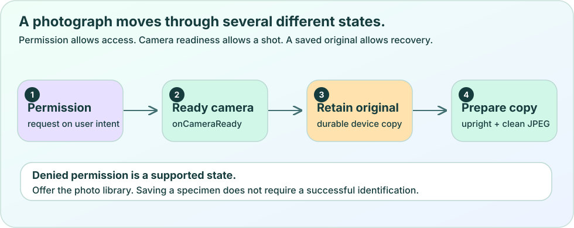
Original vector diagram. Scroll horizontally on a narrow screen. Download the SVG.
A full-resolution photograph can be much larger than a phone needs to upload for this workflow. Plantopedia's prepareImage decodes the source, applies its orientation through the rendering process, checks the upright dimensions, and limits the longer edge to 1600 pixels. It encodes a JPEG with the configured compression value and returns a separate image URI. The original remains available as the preserved source.
Image dimensions are not file size. Two 1600-pixel JPEGs can have different byte counts because their detail and compression differ. Read the resize rule in prepareImage, then use the lab to explore preparation failure and recovery. Real upload acceptance depends on actual encoded bytes and server checks. Do not promise a fixed byte limit solely from width and height.
Requesting exif: false during capture is helpful, but it does not guarantee that every later image is free of metadata. The gallery may supply another format, and an encoder may add its own JPEG segments. The repository explicitly strips metadata from the derivative and checks it before upload. Preserve that helper rather than replacing it with a comment that says metadata is gone. Resource release in finally also matters because decoded images can consume considerable device memory.
Design recovery around the last confirmed step
After a person selects a photograph, the screen can show a preview while preparation works. If preparation fails, say that step failed and offer retry or another photograph. Do not erase the original evidence merely to return to an empty screen. Plantopedia also closes the camera when the route loses focus, which avoids keeping an unnecessary camera preview active behind another route.
A save is different from identification. The current outbox saves the plant, observation, and photo, then completes. Identification is a separate deliberate action. This matters when a provider is unavailable or uncertain: a person should still be able to preserve the specimen and its photograph. A species suggestion is evidence to review, not an automatic reason to merge two specimens.
Try the failure sequence before polishing the shutter animation. Deny permission, grant it later, cancel the picker, press capture twice quickly, force preparation to fail in a controlled test, and navigate away. For each event, describe what remains stored and which action is available next. A clear recovery story is part of the camera feature itself.
Experiment
Predict the next allowed action before changing permission or advancing the capture steps. Introduce a preparation failure and identify which saved resource makes a retry possible. Explain why a preview alone is insufficient evidence of a save.
Camera permission is granted. Is the shutter immediately safe to use?
Yes, permission guarantees the camera is ready.
No, the camera view must also report readiness and avoid a simultaneous capture.
Only if a plant already exists on the server.
Check the answer and reasoning
Option 2. Permission allows access but does not establish that the mounted camera has finished initializing. A readiness event and an operation guard cover different conditions. The server record is unrelated to whether the local camera can capture.
Preparation fails after the native draft and retained original were saved. What is a useful recovery?
Delete the original and ask the person to start over.
Mark the network request complete.
Keep the evidence and retry preparation from the retained original.
Check the answer and reasoning
Option 3. The retained original is the source for another preparation attempt. Deleting it removes the recovery path. Preparation failure does not establish that any upload happened, so claiming network completion would be misleading.
Why does the repository inspect and strip metadata after re-encoding?
An encoder can add metadata, so re-encoding alone does not establish the promised boundary.
A smaller width always removes metadata.
A JPEG can never contain metadata.
Check the answer and reasoning
Option 1. Metadata can appear in encoded JPEG segments independently of pixel dimensions. Explicit stripping and checking support the intended upload rule. The original remains a separate retained resource.
Build a permission and recovery storyboard
In your course copy, connect a small camera component to a retain-first draft flow. Keep the actual upload as a later lesson step and document which behavior needs a real device.
Draw loading-permission, denied, granted-but-not-ready, ready, capturing, preparing, preview, and error states with the action available in each.
Run the teaching CameraLesson in an Expo route and supply an onCaptured callback that visibly confirms receipt of the URI.
Use the existing local.retain and local.save helpers to preserve a draft before calling prepareImage.
In a controlled teaching test, reject preparation and verify that the draft still points to the retained original.
Compare native local.ts with local.web.ts and state why the latter does not prove durable native recovery.
Acceptance criteria
The shutter cannot begin another capture while the first is in flight.
The denial screen gives a useful next action, and cancelling a picker does not become a capture error.
Preparation uses a different image resource and never overwrites the retained original.
Your evidence notes separate browser simulation, component tests, and physical-device checks.
Hint
Write down the draft before the first operation that might fail. Use finally to release guards, and keep a clear error-step label so a retry targets the correct operation.
Worked solution
The robust order is permission → camera ready → capture → await retained original → await saved draft → prepare derivative → save updated draft → preview/save action. A preparation failure leaves the earlier draft recoverable. The production CaptureScreen and resumeDraftPhoto already implement a broader version of this pattern. A gallery cancel simply returns without creating a new draft. Browser labs can verify state decisions, but actual camera permission, orientation, storage survival, and memory behavior require platform acceptance.
Explain it in your own words
If the app closes immediately after capture, what evidence would you need before promising that the photograph can be resumed? Explain the difference between a URI in component state and a retained file recorded in durable storage.
Find this idea in Plantopedia
src/features/capture/CaptureScreen.tsx — The real screen handles permission, capture, gallery input, draft persistence, preparation, save recovery, and focus changes.
src/features/capture/prepare.ts — The image pipeline checks dimensions, creates a JPEG derivative, strips metadata, and releases image resources.
src/features/capture/metadata.ts — Metadata handling is an explicit byte-level boundary rather than a promise based only on camera options.
src/services/local.ts — Native storage retains original files and saves owner-scoped drafts.
Permission, camera readiness, and an in-flight operation are different conditions.
Retaining the original and saving the draft before preparation creates a recovery path.
A prepared derivative, an uploaded photo, and an identification result represent different completed work.
LESSON 08 · Canopy
Save progress when the network disappears
Trace durable drafts, confirmed checkpoints, and stable operation identifiers through a retryable save.
By the end, you can…
You can identify the last locally confirmed checkpoint in an interrupted save.
You can explain how retrying the same operation differs from creating a new operation.
You can test a lost acknowledgement without mistaking it for a failed server write.
Bring with you
You can distinguish a captured original, a prepared derivative, and an uploaded photo.
You understand owner-scoped requests and runtime validation.
Imagine saving a tree beside a trail. The server creates the plant, but your connection disappears before its reply reaches the phone. From the phone's point of view, the outcome is uncertain. Retrying with a new identifier could create a second record. Declaring the save complete could hide missing work. A useful offline design must preserve what it knows and acknowledge what it does not know.
Plantopedia uses a local draft as a record of the intended work and its confirmed progress. On native devices, SQLite holds the draft and app document storage holds retained files. The outbox then performs the cloud steps in order. This lesson uses that actual path; the browser's local.web.ts draft Map is a preview implementation and does not establish survival across a browser reload.
Give each kind of memory a clear job
Component state answers what the current screen should show. Query's cache answers what the client last learned from the server. A durable draft answers what this owner intended to save and how far that work was confirmed. These records have different lifetimes. If you keep the only copy of an unsent observation in useState, leaving the route or restarting the app may lose it.
The native draft table uses owner and id together as its primary key. Every read and write should preserve that scope. The teaching helpers below use the existing lazy database() opener and Draft schema. The placeholders pass values separately from the SQL text, and reading parses the stored JSON back through the schema. Production local.ts already provides these operations; this excerpt exists to explain their responsibilities, not to create another competing table.
There is a further platform distinction. The separate feature-storage.web.ts uses browser localStorage for feature documents, while local.web.ts keeps the capture draft/cache preview in memory. Saying that every web feature is in memory would be inaccurate. Saying that capture drafts therefore have the same durable recovery as native SQLite would also be inaccurate. Always trace the specific abstraction a feature uses.
import { database } from '../services/local';
import { Draft } from '../services/local-schema';
export async function persistDraft(input: unknown) {
const draft = Draft.parse(input);
const db = await database();
await db.runAsync(
'INSERT OR REPLACE INTO drafts(owner,id,value) VALUES (?,?,?)',
draft.owner, draft.id, JSON.stringify(draft),
);
}
export async function readDrafts(owner: string) {
const db = await database();
const rows = await db.getAllAsync<{ value: string }>(
'SELECT value FROM drafts WHERE owner = ?', owner,
);
return rows.map(row => Draft.parse(JSON.parse(row.value)));
}
A checkpoint means the client confirmed a completed step
The current cloud outbox follows draft → plant → observation → photo → complete. At draft, the app still needs to create the plant. At plant, the plant request has completed and that checkpoint has been saved locally. At observation, it is ready to upload the prepared photo. At photo, the upload has been confirmed. Complete means this save workflow is finished; it does not mean the plant has a verified species.
The schema still accepts an identified stage for compatibility, but the present save path does not need to enter that stage. Identification happens through a separate deliberate operation. This separation lets a person preserve their photograph even when a provider is unavailable or returns uncertain evidence.
The outbox advances a checkpoint after the corresponding awaited operation succeeds. If the following local save fails, the server may be ahead of the local checkpoint. That is one reason retries need stable identities. A checkpoint is the client's confirmed knowledge, not an infallible statement about everything the server may have done. The running Set prevents duplicate in-flight work in this JavaScript process, but it is not a durable cross-device lock.
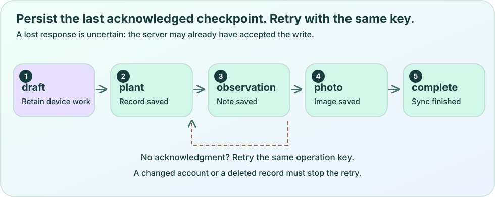
Original vector diagram. Scroll horizontally on a narrow screen. Download the SVG.
Retry the same intended operation
An idempotency key identifies one intended operation so the server can recognize a retry. Plantopedia derives stable keys such as plant_<draft-id>, observation_<draft-id>, and photo_<draft-id>. The server also compares the operation type and payload. Reusing a key with a different payload is a conflict, because the same operation cannot quietly change its meaning halfway through.
The following self-contained JavaScript-style TypeScript model deliberately uses an in-memory server result to isolate one idea. Call clientAttempt(true), observe the simulated lost acknowledgement, and then call clientAttempt(false). The saved size remains one because the second call has the same operation key and payload. A real server additionally needs authentication, durable transactions, conflict checks, deletion rules, and concurrency handling. This model supplies none of those production guarantees.
The actual draft records submittedAt before the first cloud write. The capture form stops ordinary edits after that submission snapshot, which preserves the payload associated with a possibly completed operation. Only a specific typed pre-write input rejection makes that draft editable again. A generic network failure is not proof that the server did nothing.
Teaching model: lostAcknowledgement.ts
const saved = new Map<string, { nickname: string }>();
const operationKey = 'plant_draft_42';
const frozenPayload = { nickname: 'Trail maple' };
async function serverSave(key: string, payload: { nickname: string }) {
const previous = saved.get(key);
if (previous) {
if (previous.nickname !== payload.nickname) throw new Error('Conflict');
return previous;
}
const result = { ...payload };
saved.set(key, result);
return result;
}
export async function clientAttempt(loseAcknowledgement: boolean) {
const result = await serverSave(operationKey, frozenPayload);
if (loseAcknowledgement) throw new Error('Reply was lost after commit');
return { result, serverRecordCount: saved.size };
}
// await clientAttempt(true) rejects after the server has saved.
// await clientAttempt(false) returns the same result and count 1.
Recover without overwriting evidence or changing owners
Photo recovery has a special case. The upload may have succeeded before its acknowledgement was lost, and a cached derivative may have disappeared later. Before recreating an expired derivative at the observation checkpoint, resumeDraftPhoto asks for plant detail and looks for the matching photo, observation, and capture time. If it finds them, it can resume at photo. If bytes must be prepared again, stable identifiers and server conflict rules still prevent silently overwriting an uncertain earlier upload.
Deletion is another boundary. A server tombstone records that a specimen was deleted, so an old draft cannot simply resurrect it by retrying. A record_deleted failure should remain visible rather than turning into a new plant with a new identifier behind the person's back. Likewise, a draft for one owner must never become work for the next account. The outbox checks the supplied sameUser predicate between stages, and the session disposes old API work when its owner changes.
A good retry button names the unfinished work and preserves the last known draft. Do not retry every error endlessly. Permission failures, validation failures, deletion, and uncertain provider outcomes need different responses from a brief lost connection. In the lab, advance until a failure, restore the connection, and compare the operation keys before and after retry. Your explanation should focus on what the app knows at each point.
Experiment
Predict the local checkpoint and remote result when a reply disappears after a write. Advance the pipeline, introduce a failure, and retry with the same operation identity. Explain why the UI must preserve the draft instead of assuming the server rolled back.
The server saved a plant, but its reply never reached the phone. What is the safest retry?
Generate a new draft ID because every tap must be a new operation.
Reuse the frozen payload and the original operation identity.
Mark all remaining steps complete.
Check the answer and reasoning
Option 2. The server can recognize the original operation and return its recorded result. A new identity may create duplicate work. The lost reply proves neither that the write failed nor that the later observation and photo steps completed.
Does TanStack Query's in-memory cache replace a durable native draft?
No. A draft must preserve intended work and checkpoints across process restarts.
Yes. A query key guarantees persistence.
Yes, if the cache contains a URI string.
Check the answer and reasoning
Option 1. Query cache and durable intent have different responsibilities. A key separates cached data but does not by itself write a draft or retain a physical file. A URI is useful only while the referenced resource remains available.
The current outbox reaches complete. What can the interface claim?
The species is verified.
Every platform has identical offline recovery.
The plant, observation, and photo save workflow has completed.
Check the answer and reasoning
Option 3. Identification is an independent action in the current implementation. Native SQLite/file recovery and the browser draft preview are different. A completed save should be described precisely without claiming unrelated work succeeded.
Write a failure diary for one draft
Use a synthetic specimen and record both local knowledge and remote state through interrupted saves. The goal is a recoverable sequence, not a claim that every request executes exactly once.
Create a table with columns for event, local checkpoint, remote records, operation key, and next action.
Trace a normal save through draft, plant, observation, photo, and complete.
Repeat the trace with a lost acknowledgement immediately after plant creation, then retry with the same key and payload.
Repeat with a successful photo upload whose reply is lost and whose cached derivative later expires.
Add an account change and a server deletion; explain why neither permits silently replaying the draft as new work.
Acceptance criteria
The trace distinguishes a remote commit from a received acknowledgement.
Retry preserves IDs and the submitted payload.
A failed step leaves evidence and the last confirmed checkpoint available.
Your web/native comparison names the actual storage abstraction instead of making one claim about all browser data.
Hint
Ask two questions after every awaited operation: what might have happened remotely, and what has been recorded locally? They may have different answers.
Worked solution
After a lost plant acknowledgement, the local checkpoint can remain draft while the server already has the plant. Retry uses plant_<same-id> with the original payload, so the server returns the prior result and the client can record plant. Observation follows the same principle. If an uploaded photo is found during resume, move to photo without uploading another image. An owner change stops old work; a record_deleted result preserves the failure instead of resurrecting the record. No table row should claim that a missing reply proves a rollback.
Explain it in your own words
Why can an operation guard in a JavaScript Set reduce duplicate taps while still being insufficient after an app restart? Explain which responsibilities belong to local persistence and which belong to the server.
Find this idea in Plantopedia
src/services/outbox.ts — The save path advances checkpoints, preserves failures, uses stable operation keys, and checks the owner predicate.
src/services/local.ts — Native SQLite and retained document files provide draft persistence.
src/services/local.web.ts — The capture draft/cache browser preview uses Maps and has a different lifetime.
src/features/capture/resume.ts — Recovery can find an acknowledged-by-server photo before recreating an expired derivative.
server/src/application/core.ts — Durable server operations compare type/payload hashes, recognize retries, and honor deleted records.
tests/components/outbox.test.tsx — Existing tests cover retained failure details, metadata rejection, and stopping work after an account change.
A durable draft records intended work and locally confirmed checkpoints.
Stable operation identity and frozen payloads make uncertain retries safer.
Lost acknowledgements, owner changes, and deletion are first-class recovery cases.
LESSON 09 · Canopy
Make one experience work across devices
Use platform files, readable glass, flexible language, and explicit voice cleanup without promising identical capabilities.
By the end, you can…
You can choose a small platform check or a separate platform file for the right reason.
You can explain why an opaque surface is a valid glass fallback.
You can trace microphone, connection, playback, and cleanup states without confusing them with one loading flag.
Bring with you
You can explain owner-scoped resources and durable native drafts.
You can build an accessible component with props and state.
Cross-platform work aims to preserve the person's task while adapting to the device. A person should be able to find a plant, read its notes, and understand a save failure on a phone or in a browser. That does not mean every platform uses the same storage, native visual effect, or audio implementation. Good shared code makes those differences explicit behind a small, dependable interface.
Plantopedia already demonstrates this pattern. It imports GlassSurface without naming a platform, while the bundler chooses the iOS, browser, or default implementation. Audio and photo helpers use similar boundaries. This lesson connects those code choices to readable design, translated text, and a voice experience that releases the microphone when its session ends.
Share a contract and vary the implementation
Use Platform.OS for a small local difference, such as a platform-specific explanation. When the entire implementation differs, a separate file is easier to read and test. In this repository, GlassSurface.ios.tsx uses the native glass API when suitable, GlassSurface.web.tsx uses browser capabilities, and GlassSurface.tsx provides a regular surface. Callers keep one import and the same ViewProps-shaped interface.
The teaching default surface below is intentionally simple and fully opaque. Put platform variants beside it only when you have a concrete need. A .web.tsx implementation can contain browser-only CSS capability checks; those checks should not leak into the native component. A shared import does not imply that every platform file has identical internals or lifetime guarantees.
The same reasoning explains storage and audio boundaries. A browser preview can help test screen flow while a native module handles continuous microphone frames. Name those limits in the product and in your acceptance evidence. A simulated permission button in this course cannot prove that an iOS microphone session releases correctly.
Teaching example: StudySurface.tsx
import { StyleSheet, View, type ViewProps } from 'react-native';
export function StudySurface({ style, ...props }: ViewProps) {
return <View {...props} style={[styles.surface, style]} />;
}
const styles = StyleSheet.create({
surface: {
backgroundColor: '#FFFFFF', borderColor: '#B8D4CC',
borderWidth: 1, borderRadius: 24, padding: 20, gap: 12,
},
});
// StudySurface.ios.tsx and StudySurface.web.tsx can later
// export the same component API with different implementations.
// Callers keep: import { StudySurface } from './StudySurface';
Make glass support reading instead of competing with it
A vivid background can make an interface feel alive, but text needs a stable reading surface. A translucent card may look clear over one illustration and become difficult over another. Place strong text on a sufficiently solid surface, use generous spacing, and keep the most important action visually distinct. Decorative color should help orientation without becoming the only way to recognize a failure or selection.
Plantopedia's iOS implementation begins conservatively with reduced transparency enabled, reads the system preference, listens for changes, and falls back to a regular View when transparency should be reduced or a glass capability is unavailable. Its browser implementation also checks contrast preference and backdrop-filter support. The default implementation remains a regular View. These are deliberate ways to preserve the task, not an incomplete version of the experience.
Treat motion similarly. Animation may explain a transition, but it should not be necessary to understand a status. Respect reduced-motion preferences, allow a static illustration, and keep progress text available. This course uses vector graphics because they stay sharp at different sizes, while its diagrams still need text descriptions and a sensible reading order. Test the smallest layout, enlarged text, keyboard focus, and light and dark surfaces before adding more blur.
Original vector diagram. Scroll horizontally on a narrow screen. Download the SVG.
Let language and text size change the layout
A translated action can be much longer than its English version. Fixed-height text boxes and narrow icon-only actions can therefore fail even on a screen that looked balanced during initial design. Allow text to wrap, let rows grow, and use minimum touch sizes rather than assuming one short label. Test a large font scale together with a narrow screen, because these conditions interact.
Plantopedia's preferences provider resolves Light, Dark, or System appearance and exposes a translation function for seven dictionaries. Components ask for a message key instead of scattering duplicated English strings through the interface. The following provider-dependent excerpt uses existing message keys. Notice that its action has an explicit role and label, its text is allowed to grow, and the colors come from the resolved theme.
Do not translate an arbitrary error code by displaying it directly as prose. Map expected codes to useful local messages and an action, while preserving a safe code for diagnosis. Likewise, a species' scientific name and a person's chosen nickname have different translation rules from interface copy. Keep specimen identity stable while presentation language changes.
Voice is a resource lifecycle, not a single spinner
Continuous voice involves permission, hardware, a server connection, microphone input, received captions, queued playback, and interruptions. A single busy flag cannot explain whether the app is waiting for permission, listening, processing, or playing. Plantopedia's voice state describes these phases and also tracks facts such as muted and playingAudio. The interface can therefore give a useful action at each point.
The default session controller creates a live voice transport for an owner. Its native audio factory looks for the local PlantopediaVoice module, requests microphone permission, and subscribes to audio, played, and failure events. Expo Go does not contain that custom native bridge, so continuous native voice requires a development build that includes it. Reinstalling JavaScript dependencies or refreshing Metro does not add native code to an already installed binary.
Connection setup and playback can finish after a person presses End. The transport uses a generation counter to distinguish the current run from an old one. Cleanup advances that counter, detaches socket handlers, closes the socket, clears timers and queued audio, and disposes the audio resource. A late event from the old run must not revive the microphone or publish a stale caption into a new session.
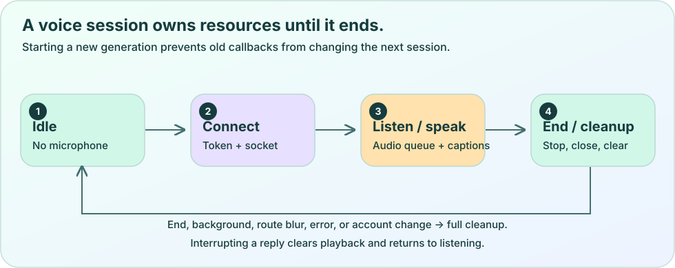
Original vector diagram. Scroll horizontally on a narrow screen. Download the SVG.
Choose the owner of cleanup carefully
A controller can outlive a dock even though its active connection ends when the route loses focus. Plantopedia keeps one owner-scoped voice controller in the session so individual route components do not each create a competing microphone. VoiceDock explicitly disconnects that connection during route-focus cleanup. Its cloud session also disconnects when the app becomes inactive and releases resources on cleanup. Signing out must release owner resources too. Read the existing ownership path before adding another useEffect that starts audio automatically.
The teaching hook below shows only the cleanup idea for an injected resource. It neither starts recording nor replaces the production SessionProvider. Its dependency must be stable; if a caller creates a new object every render, cleanup will repeatedly disconnect it. The onFailure callback should be stable too. The production transport performs its own detailed teardown and stale-event checks.
Captions and a text interaction path should remain useful when audio playback is blocked or the microphone is denied. Test denial, repeated start/end taps, backgrounding, disconnect during playback, and an account change. The lab demonstrates the state decisions with synthetic events; it cannot establish acoustic quality, interruption sensitivity, or actual native hardware release.
Predict which voice events are still allowed after End. Start, interrupt, and end the teaching session, then compare the displayed state with your prediction. Explain what real-device evidence would still be needed for microphone release.
When native glass is unavailable or reduced transparency is enabled, what should happen?
Hide the content that normally sits on glass.
Keep the same task available on a readable opaque surface.
Force blur because visual consistency is more important.
Check the answer and reasoning
Option 2. The surface is there to support the person's task. A readable regular View preserves content and actions across capabilities and accessibility preferences. Hiding content or forcing transparency would undermine that purpose.
Why can Expo Go preview screens but fail continuous native voice in this app?
Expo Go cannot render Text components.
A .tsx file always requires Xcode.
Its installed native binary does not include the custom PlantopediaVoice bridge.
Check the answer and reasoning
Option 3. JavaScript can only call native modules present in the installed binary. A matching development build includes the custom bridge. Refreshing JavaScript does not insert native code into Expo Go.
An old socket event arrives after End and a new Start. What should prevent it from updating the new session?
A run identity or generation check that recognizes the event as stale.
The button's visual opacity.
Changing the plant nickname.
Check the answer and reasoning
Option 1. Asynchronous events can outlive the action that created them. A generation check ties each event to the current run. Visual styling and unrelated record data do not establish that lifecycle relationship.
Run a cross-platform continuity review
Review one plant card and one voice flow across visual, language, and resource boundaries. Record observed behavior separately from simulated behavior.
List the shared import and selected implementation for GlassSurface on iOS, web, and the default native path.
Render a card with enlarged text and long translated labels; explain any clipping and adjust the teaching layout to grow.
Compare a vivid translucent surface with a solid surface and verify that status remains understandable without color or motion alone.
Draw start → permission → connecting → listening → playback/interrupt → end, including a denial path and a late-event path.
Write a device checklist for denied microphone permission, backgrounding, disconnect during playback, and signing out.
Acceptance criteria
Each platform preserves the main task even when a visual or audio capability is unavailable.
The card can wrap long labels without shrinking the touch action below its intended minimum.
Your voice trace names the resource owner and the point that invalidates stale events.
Your evidence explicitly distinguishes browser models from native hardware acceptance.
Hint
Follow resource creation to its matching disposal. For visual testing, combine narrow width, long text, and large font size instead of testing each only in isolation.
Worked solution
Keep a shared component API and let platform files vary its internals. Use an opaque readable fallback when glass is unavailable or reduced transparency is requested. Let text wrap and resolve copy through the preferences provider. Keep the live transport in the owner-scoped session, disconnect and dispose its audio/socket resources at the appropriate lifecycle boundary, and ignore events from previous generations. A diagram or mocked test supports the state logic, while a development build on a physical device supplies the remaining camera/audio evidence.
Explain it in your own words
If the browser can display the same voice dock as iOS, which facts still need separate verification before you claim equal voice support? Explain implementation selection, permission, playback, and cleanup.
Cross-platform design shares task contracts while allowing implementation differences.
Readable opaque surfaces, flexible text, and static feedback are complete accessibility choices.
Voice sessions need a stable owner, detailed states, stale-event protection, and explicit resource release.
LESSON 10 · Bloom
Prove the journey before you release it
Test observable behavior, debug one boundary at a time, and assemble a complete Plantopedia learning capstone.
By the end, you can…
You can choose a meaningful test for a concrete failure and explain what it cannot prove.
You can diagnose a request or native capability failure without exposing private data.
You can present a capstone with reproducible evidence and a platform-specific release checklist.
Bring with you
You have completed lessons 01–09 and can trace a specimen from screen to storage.
You can distinguish browser teaching models, component tests, and native device behavior.
A green test result is useful only when you know which behavior it exercises. A component test can show that a retry button invokes the right callback. It cannot prove that a real camera applies orientation correctly or that a microphone is released on a particular phone. A release decision needs several kinds of evidence with honest boundaries.
This final lesson turns the course into a connected workflow. You will test the person's visible journey, challenge uncertain outcomes, and build a small capstone that carries one specimen through discovery, capture, durable saving, and review. The goal is to understand why the app behaves correctly, including when the happy path stops.
Choose tests from behavior and risk
Start with a concrete promise. For example, a failed garden load should offer a retry, a rejected image should never be uploaded, and a draft from an old account should not start work for the new account. Each promise suggests an observable result. A test that only checks whether a helper was called may miss whether the person sees the right state.
Use a small logic test for deterministic transformations such as filtering or checkpoint decisions. Use a component test for labels, interactions, pending states, errors, and screen-reader-facing semantics. Use an API test for request validation, authorization, operation conflicts, and server persistence behavior. Then use real-device acceptance for native permission, retained files after restart, audio behavior, and platform rendering.
The repository reflects these different purposes through unit tests, server functional tests, and component tests. Its mocks make native dependencies controllable during automated checks. They are useful for forcing failures, but they also establish the boundary of the evidence. If the camera mock always returns the same upright photo, that test cannot prove real image-orientation handling.
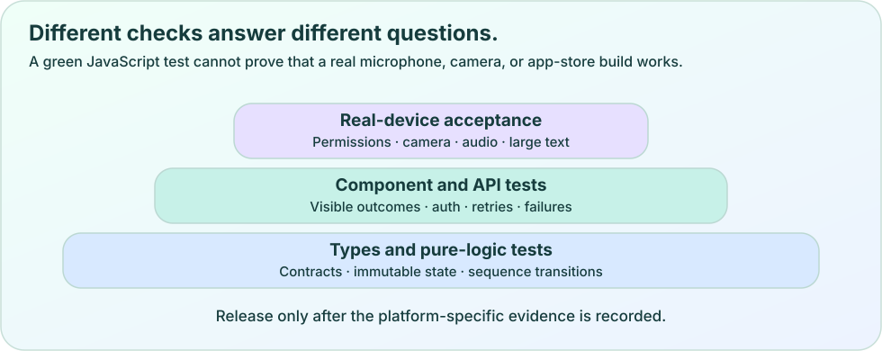
Original vector diagram. Scroll horizontally on a narrow screen. Download the SVG.
Test an action through its accessible interface
The following self-contained example uses the repository's React Native Testing Library v13 style. The test finds the action by role and label, presses it through userEvent, and checks the observable callback. A second assertion confirms that the explanation is visible. These queries help connect test intent to the way a person discovers an action.
This small test is intentionally limited. It proves that the rendered action requests a retry once. It does not prove that a later network call succeeds, that a server record remains unique, or that the loading state prevents double submission. Add those checks only where they support a real promise. Avoid copying implementation details into a test that merely repeats the same logic.
For asynchronous UI, await the user interaction and use the testing library's waiting tools when the result arrives later. A test can accidentally pass before the relevant promise resolves. Conversely, increasing arbitrary sleep durations does not explain the condition being awaited. Prefer waiting for the specific text, state, or request result that matters.
Teaching example: RetryNotice.test.tsx
import { Button, Text, View } from 'react-native';
import { render, screen, userEvent } from '@testing-library/react-native';
function RetryNotice({ onRetry }: { onRetry: () => void }) {
return <View>
<Text>Your garden could not be loaded.</Text>
<Button title="Try again" onPress={onRetry} />
</View>;
}
test('a failed load gives the person an actionable retry', async () => {
const retry = jest.fn();
const user = userEvent.setup();
render(<RetryNotice onRetry={retry} />);
expect(screen.getByText('Your garden could not be loaded.')).toBeOnTheScreen();
await user.press(screen.getByRole('button', { name: 'Try again' }));
expect(retry).toHaveBeenCalledTimes(1);
});
Challenge sequences, not only individual screens
Many serious defects require two or three events. Start a request, change accounts, then deliver the old response. Save a photo, lose the acknowledgement, restart, then retry. Start voice, press End, then deliver an old socket event. A test that exercises only a successful first action never reaches these conditions.
For each sequence, write the trigger, expected boundary, and visible consequence. In an outbox test, a lost acknowledgement should leave the draft recoverable while retry retains the same operation identity. In an authorization test, an authenticated request still must not read another owner's record. In a voice test, old events must not restart a disposed session. Inspect whether a later cleanup or schema check already mitigates a suspected issue before treating it as a confirmed defect.
An adversarial review is a disciplined attempt to disprove a claim. It is not a search for alarming language. Require a concrete reproduction, a source location, and an explanation of the person-visible effect. Fix a confirmed issue, repeat the relevant sequence, and then check that the fix did not create a new failure path. A reviewer should also distinguish an existing limitation from a regression introduced by the new work.
Debug the first boundary that fails
When the garden fails to load, identify whether configuration parsed, whether a token was available, whether the request reached the API, whether HTTP reported a failure, and whether the body passed its schema. These are different failures with different remedies. A physical phone's localhost is the phone, and the app's public URL validation restricts accepted development endpoints, so use the repository's documented phone-access workflow.
Use safe operation names and error codes in diagnostic notes. Do not paste a session token, provider key, personal photograph, or private conversation into a bug report. For native voice, first verify that the installed development binary contains PlantopediaVoice. A JavaScript refresh cannot repair a missing native module. For stale data, inspect the owner-scoped Query key and invalidation before adding another state variable that copies the same result.
Run the repository's existing checks from its root using the pinned Node and npm versions. Type checking, unit tests, component tests, and server functional tests answer different questions. When a change affects only a focused area, run the relevant targeted check during development and complete the required suite before considering a release. A passing suite remains evidence for the cases it covers, not a guarantee about every device.
Repository checks: run from the Plantopedia root
# Use the version in .nvmrc: Node 22.23.1.
# The repository also pins npm 12.0.2.
npm run typecheck
npm run test:unit
npm run test:components
npm run test:functional
# Existing focused example: choose the configured component runner.
NODE_OPTIONS=--experimental-vm-modules npx jest --config jest.mobile.config.cjs --runInBand tests/components/outbox.test.tsx
Separate an installable build from release acceptance
EAS development builds include the developer tooling and native modules needed for this app's voice bridge. A preview build supports internal review, while a production profile prepares the distribution form chosen in eas.json. Changing a native plugin or module requires a new native binary; it is not the same operation as refreshing JavaScript. The repository's npm run ios and npm run android scripts use its EAS wrapper and development profile.
Before distribution, test the actual build with denied permissions, large text, long translations, a slow or lost connection, an app restart with a pending draft, account changes, and voice interruption. Confirm that the production public API URL points to the intended server and that private provider credentials remain server-only. Signing, provisioning, store accounts, and platform review are separate from code compilation.
The app also has an existing Vercel build/deployment path for web and API packaging. When you work on that path, installing the missing Vercel CLI with npm i -g vercel is strongly recommended so you can use vercel env pull, vercel deploy, and vercel logs. Follow the existing deployment scripts and README before changing configuration, and keep downloaded environment files private. Do not deploy or provision a new service merely to finish this course.
Experiment
Predict which check can substantiate each claim. Compare logic, component, server, and device evidence, then identify one remaining gap. Explain why a browser simulation cannot certify native permissions or audio behavior.
A mocked camera test passes. Which claim is justified?
Every supported physical camera handles orientation correctly.
The tested component follows the mocked camera result as expected.
Native file retention survives every operating-system cleanup.
Check the answer and reasoning
Option 2. The test supports behavior exercised with the mock. Physical orientation and storage survival need tests or acceptance that actually reach those systems. Claiming more would confuse a controlled dependency with a real device.
Which test most directly challenges uncertain retry behavior?
Checking that a card has a green border.
Counting the number of files in the test folder.
Commit a server write, lose its reply, retry with the original key, and assert no duplicate record appears.
Check the answer and reasoning
Option 3. This sequence reaches the exact uncertainty the design must handle. Visual styling and file counts may be useful for other purposes, but neither exercises server commit, lost acknowledgement, and retry identity.
A new custom native module was added, but Expo Go still reports it missing. What next?
Build and install a development client containing the module, then verify on the target platform.
Rename the JavaScript variable.
Assume a browser lab proves native support.
Check the answer and reasoning
Option 1. The installed binary must contain the native implementation. JavaScript edits cannot insert it into Expo Go. A development build and platform acceptance address the actual missing capability.
Capstone: one specimen, one complete learning journey
In a separate course copy, assemble a small vertical slice that lets a person discover a specimen, review a photograph, preserve a draft, save through the existing API path, and return to the correct detail screen. Use the existing services rather than creating another backend.
Define the acceptance story in full sentences: a guest can explore, a signed-in person can use their private cloud garden, and two specimens of one species retain different IDs.
Build an accessible PlantCard with props and a route that uses the specimen ID; keep shared appearance and language in the existing preferences provider.
Use local state for editable input and Query for owner-scoped server data; show loading, empty, success, and recoverable error states.
Connect capture to retained originals, saved drafts, prepared derivatives, and the existing outbox. Keep identification a deliberate separate action.
Write a normal trace and failure traces for denied permission, malformed response, lost acknowledgement, account change, and deleted record.
Add a component test for one visible recovery action and a logic/API test for one consequential boundary. State what each test cannot establish.
Run the relevant repository checks and record commands, outcomes, and remaining device checks in a short evidence file.
Review the actual development build with large text, reduced transparency, a long translation, a pending draft after restart, and voice start/end where supported. Stop at a reviewable release checklist; publishing is a separate decision.
Acceptance criteria
The specimen ID remains stable across navigation, draft storage, and retry.
No private provider key is bundled into the client, and the server enforces owner access.
Every failed step leaves an understandable message and a justified next action.
The evidence distinguishes verified behavior, teaching models, and remaining platform acceptance.
The capstone explanation connects components, state, requests, persistence, and cleanup in plain English.
Hint
Implement one complete specimen journey before adding more screens. For each boundary, ask what is input, what is validated, what is retained, and what happens if the next step never returns.
Worked solution
A coherent capstone uses PlantCard props for presentation, the specimen ID for routing, local state for the draft form, preferences context for shared presentation, owner-scoped Query keys for server data, shared schemas at API boundaries, and the existing native draft/outbox helpers for recovery. Its tests target observable actions and uncertain sequences. Its final evidence names actual commands and outcomes, and leaves camera/audio/signing/store checks explicit until run on the appropriate build. Completion means you can explain and demonstrate that connected journey without inventing guarantees the evidence does not support.
Explain it in your own words
Choose one claim from your capstone that you believe strongly. Describe the smallest test or device experiment that could prove it wrong, and explain what you would change if that experiment failed.
Find this idea in Plantopedia
package.json — The repository pins tool versions and defines separate type, unit, component, functional, and build checks.